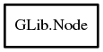

Node
Object Hierarchy:

Description:
[ Compact ]
public class Node<G>
The Node struct represents one node in a n-ary tree.
Content:
Creation methods:
- public Node (owned G data = null)
Methods:
- public Node<weak G> copy ()
Recursively copies a Node (but does not
deep-copy the data inside the nodes, see g_node_copy_deep if you need that).
- public unowned Node<G> insert (int position, owned Node<G> node)
Inserts a Node beneath the parent at the
given position.
- public unowned Node<G> insert_before (Node<G> sibling, owned Node<G> node)
Inserts a Node beneath the parent before
the given sibling.
- public unowned Node<G> insert_after (Node<G> sibling, owned Node<G> node)
Inserts a Node beneath the parent after the
given sibling.
- public unowned Node<G> append (owned Node<G> node)
- public unowned Node<G> prepend (owned Node<G> node)
Inserts a Node as the first child of the
given parent.
- public unowned Node<G> insert_data (int position, owned G data)
- public unowned Node<G> insert_data_before (Node<G> sibling, owned G data)
- public unowned Node<G> append_data (owned G data)
- public unowned Node<G> prepend_data (owned G data)
- public void reverse_children ()
Reverses the order of the children of a Node
.
- public void traverse (TraverseType order, TraverseFlags flags, int max_depth, NodeTraverseFunc func)
Traverses a tree starting at the given root Node
.
- public void children_foreach (TraverseFlags flags, NodeForeachFunc func)
Calls a function for each of the children of a
Node.
- public unowned Node<G> get_root ()
Gets the root of a tree.
- public unowned Node<G> find (TraverseType order, TraverseFlags flags, G data)
Finds a Node in a tree.
- public unowned Node<G> find_child (TraverseFlags flags, G data)
Finds the first child of a Node with the
given data.
- public int child_index (G data)
Gets the position of the first child of a Node
which contains the given data.
- public int child_position (Node<G> child)
Gets the position of a Node with respect to
its siblings.
- public unowned Node<G> first_child ()
- public unowned Node<G> last_child ()
Gets the last child of a Node.
- public unowned Node<G> nth_child (uint n)
Gets a child of a Node, using the given
index.
- public unowned Node<G> first_sibling ()
Gets the first sibling of a Node.
- public unowned Node<G> next_sibling ()
- public unowned Node<G> prev_sibling ()
- public unowned Node<G> last_sibling ()
Gets the last sibling of a Node.
- public bool is_leaf ()
- public bool is_root ()
- public bool is_ancestor (Node<G> descendant)
Returns true if
this is an ancestor of descendant.
- public uint depth ()
Gets the depth of a Node.
- public uint n_nodes (TraverseFlags flags)
Gets the number of nodes in a tree.
- public uint n_children ()
Gets the number of children of a Node.
- public uint max_height ()
Gets the maximum height of all branches beneath a
Node.
- public void _unlink ()
Unlinks a Node from a tree, resulting in
two separate trees.
- public Node<G> unlink ()
Fields: